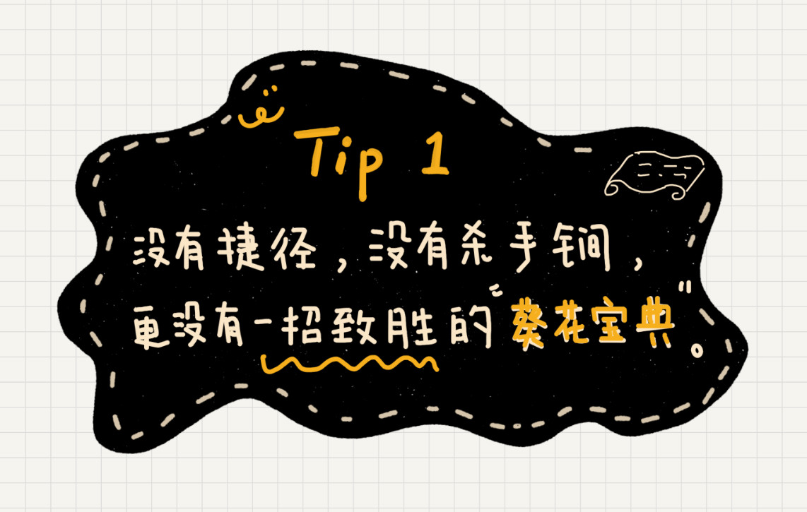
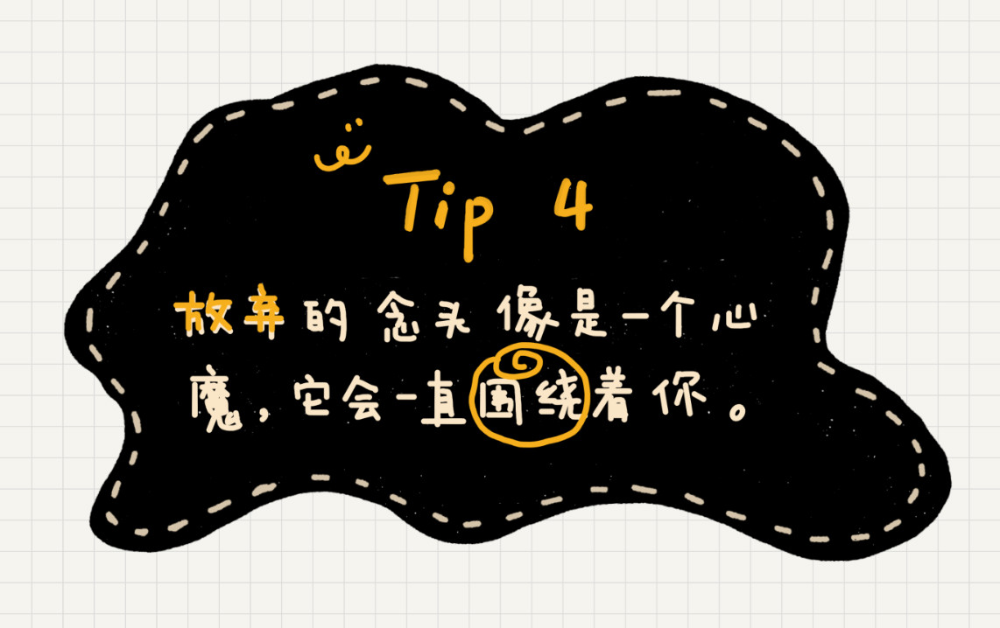

不定期福利第二期 | 王争：羁绊前行的，不是肆虐的狂风，而是内心的迷茫
你好，我是王争。
专栏更新过半，我发现有些小伙伴已经掉队，虽然有人掉队也挺正常，但是我还是想尽量拉一把。于是，周末的时间，我就在想，究竟是什么原因让有些小伙伴掉队了？是内容本身太难了吗？是我讲的不够清楚吗？还是小伙伴本身基础太差、不够努力、没有掌握学习方法？
我觉得都不是，让你掉队的原因，从根儿上讲，是你内心的迷茫。如果我们不那么确信能不能看懂、能不能学会的时候，当面对困难的时候，很容易就会否定自己，也就很容易半途而废。
这就好比你迷失在沙漠中，对你来说，肆虐的狂风并不可怕，可怕的是，你不知道该努力多久才能走出沙漠，不知道到底能不能走出沙漠。这种对结果的未知、不确定，导致了你内心的恐惧，最后就差那么一点点就可以走出沙漠的时候，你放弃了。
学习也是同样的道理。所以，我今天不打算讲学习方法，也不打算给你灌输心灵鸡汤，我就讲讲，对这个专栏的学习，或者对于任何学习来说，我觉得你应该建立的一些正确认知。有了这些认知，希望你能在后面的专栏学习中，少一点迷茫，多一份坚持。
没有捷径，没有杀手锏，更没有一招致胜的“葵花宝典”

有小伙伴给我留言说：“看书五分钟，笔记两小时，急求学霸的学习方法”，还有人问，“数据结构和算法好难，到底该怎么学？是我的学习方法不对？还是我太笨？”
我想说，并没有什么杀手锏的学习方法，更没有一招致胜的“葵花宝典”。不知道这么说有没有让你失望。如果你真要“求”一个学习方法，那就再看看我在专栏开始写的“如何抓住重点，系统高效地学习数据结构与算法”那篇文章吧。
说实话，我也挺想知道学霸的学习方法的，所以，在求学路上，每当有学霸来分享学习方法，我都要去听一听。但是，听多了之后，我发现其实并没有太多用。因为那些所谓学霸的学习方法，其实都很简单，比如“认认真真听讲”“认认真真做每一道题”等等。
也不是他们说的不对，但是这种大实话，我总有一种领会不了的感觉，更别说真正指导我的学习了。而且，我觉得，很多时候，这些方法论的难点并不在于能不能听懂，而是在于能不能执行到位。比如很多人都听过“一万小时定律”，坚持一万个小时，你就能成为大牛，但有多少人能坚持一万个小时呢？
所以，这里我要纠正一个认知，那就是，学习没有“杀手锏”似的方法论。不要怀疑是不是自己的学习方法不对，不要在开始就否定自己。因为否定得越多，你就越迷茫，越不能坚持。
不要浮躁，不要丧失思考能力，不要丧失学习能力
有小伙伴给我留言说：“老师，这个地方看不懂，你能不能再解释一下”，还有小伙伴留言说：“《红黑树（上）》里的图为什么跟你的定义不相符？”
对于留言的问题，我都挺重视的，但是当仔细看这些问题的时候，我发现，实际上文章里已经有答案了，他根本没有认真看、认真思考，更别说去自己搜搜资料，再研究下，就来提问了。
一般情况下，我都会回复“你自己再认真看一遍”或者“你自己先去网上搜一下，研究研究，如果还不懂再给我留言”。告诉你答案，并不会花费我太长时间，但是，这样会让你丢失最宝贵的东西，那就是，你自己的思考能力、学习能力，能自己沉下心来研究的能力。这个是很可怕的。
现在，互联网如此发达，我们每天都会面对各种各样的信息轰炸，人也变得越来越浮躁。很多人习惯看些不动脑子就能看懂的东西，看到稍微复杂的东西，就感觉脑子转不动了。
上学的时候还好，要考试，有老师督促，还能坚持学习。但是工作之后，没有人监督，很多人陷入各种手机 App 中不能自拔，学一会儿就想玩会儿手机，想静下心来学上半个小时都无比困难。无法自律，沉不下心来，那你就基本可以跟学习说拜拜了。
只有做好打硬仗的心理准备，遇到困难才能心态平和
还有小伙伴给我留言说：“看不懂，一个 4000 多字的文章、10 分钟的音频，反复看了、听了 2 个小时都没怎么看懂”。我给他的回复是：“如果之前没有基础或者基础不好的话，看 2 个小时还不懂，很正常，看一个礼拜试试。”
“一个礼拜”的说法，我一点都不是夸张。虽然专栏的每篇文章都只有三四千字，10 分钟左右的音频，但是知识点的密度还是很高的。如果你潜意识里觉得应该一下子就能看懂，就会出现这样的情况：看了一遍不懂，又看了一遍还是不怎么懂，然后就放弃了。
数据结和算法就是一个非常难啃的硬骨头，可以说是计算机学科中最难学的学科之一了。我当时学习也费了老大的劲，能做到讲给你听，我靠的也是十年如一的积累和坚持。如果没有基础、或者基础不好，你怎能期望看 2 个小时就能完全掌握呢？
面对这种硬骨头，我觉得我们要有打硬仗、打持久战的心理准备。只有这样，在学习的过程中遇到困难的时候，心态才能更加平和，才能沉下心来有条不紊地去解决一个个的疑难问题。这样，碰到问题，你可能还会“窃喜”，我又遇到了一个之前不怎么懂的知识点了，看懂它我又进步了一点。甚至你还会“坏坏地”想，又多了一个拉开我跟其他人距离的地方了。跨过这些点，我就能比别人更厉害。
一口吃不成胖子，如果你基础不好，那就从长计议吧，给自己定一个长一点的“死磕”计划，比如一年。面对不懂的知识点，沉下心来逐个突破，这样你的信心慢慢也就建立了。
“放弃”的念头像是一个心魔，它会一直围绕着你

还有小伙伴给我留言说：“开始没怎么看懂，看了一下午，终于看懂了”。看到这样的留言，我其实挺为他感到庆幸的，庆幸他没有中途放弃。因为，放弃的念头就像一个心魔，在我们的学习过程中，它会一直围绕着我们，一旦被它打败一次，你就会被它打败很多次，掉队就不可避免了。
我分享一个我最近思考比较多的事情。前一段时间，我在研究多线程方面的东西，它涉及一块比较复杂的内容，“Java 内存模型”。虽然看懂并不难，但是要透彻、无盲点地理解并不容易。本来以为半天就能看懂的东西，结果我从周一一直看到周五下午，断断续续花了 5 天的时间才把它彻底搞懂。回忆起这 5 天，我有不下 10 次都想放弃，每次心里都在想：“算了，先放一放，以后再说吧”“太难了，啃不下来，算了。”“就这样吧，反正也用不到，没必要浪费时间”等等。这种放弃的念头就像一个邪恶的魔鬼一样，一直围绕着我这 5 天的研究中。
现在回想起来，我很庆幸我当时没有放弃，多坚持了几天。如果当时我放弃了，那之后再遇到技术难题时，“放弃”的心魔还会再来拜访我，潜意识里我还是会认输。
之所以没有放弃，我自己总结了两点原因。
第一，我对学习这件事情认识得比较清楚，我一直觉得，没有学不会的东西，没有攻克不了的技术难题，如果有，那就说明时间花得还不够多。
第二，我之前遇到卡壳的时候，几乎从来没有放弃过，即便短暂地停歇，我也会继续拎起来再死磕，而且每次都能搞定，正是这种正向的激励，给了我信心，让我再遇到困难的时候，都能坚信自己能搞定它。
入门是一个非常漫长和煎熬的过程，谁都逃不过
还有小伙伴留言说：“看到有小伙伴有很多疑问，我来帮作者说句话，文章写的很好，通俗易懂，如果有一定基础，看懂还是不成问题的。”
我觉得，有些小伙伴的觉悟还是挺高的：）。我文章写得再通俗易懂，对于之前没有任何基础的人来说，看起来还是挺费劲的。
第一，数据结构和算法这门课程本身的难度摆在那里，想要轻松看懂，本身就不太现实。第二，对于任何新知识的学习，入门都是一个非常漫长和煎熬的的过程。但是这个过程都是要经历的，谁都逃不过。只要你挺过去，入了门，再学习更深的知识就简单多了。
我大学里的第一堂课是 C 语言，现在回想起来，当时对我来说，简直就是听天书。因为之前没有接触过计算机，更别说编程语言，对我来说，C 语言就像另一个世界的东西。从完全看不懂，到慢慢有点看懂，再到完全看懂，不夸张地讲，我花了好几年的时间，但是当掌握了之后，我发现这个东西其实也不难。但是如果没有度过漫长和煎熬的入门的过程，如果没有一点韧性，没有一点点信念，那可能也没有现在的我了。
其实我一直觉得情商比智商更重要。对于很多学科的学习，智商并不是瓶颈，最终能够决定你能达到的高度的，还是情商，而情商中最重要的，我觉得就是逆商（逆境商数，Adversity Quotient），也就是，当你遇到困难时，你会如何去面对，这将会决定你的人生最终能够走多远。
好了，今天我想分享的关于学习的几个认知就讲完了。现在，你有没有对学习这件事有更加清晰的认识呢？能不能让你少一点迷茫，多一份坚持呢？
最后，我有一句送给你：吃得苦中苦，方为人上人。耐得住寂寞，才能守得住繁华。